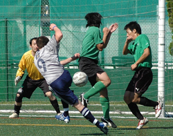
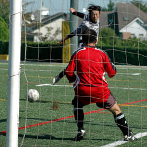

|
YCAC, Sunday 11th October.
YC&AC 1st team scored seven goals to take their second victory of the season against a persistent ZION FC on a sunny Sunday afternoon at YC&AC, on October 11th. It wasn't all one-way traffic though as Zion pulled 2 goals back, one either side of half-time but YCAC also could have netted a few more.
Attacking midfielder Shigehiro Yamazaki and forward Hidenori Yoshioka each scored two goals whilst up-and-coming teenager duo Mikey Taw and Kento Nakamura, defender Jinung Chong each had a goal. YC&AC took control of the match offensively, ith the out of shape ginger, Anthony Savage, putting in a great shift in the midle of the park, despite looking like me might bring up the previous nights consumption of beer at any moment.
Although they were held in their own half of the park for much of the match, ZION FC made it clear that their acute counter attack is definitely the standard of TML1, especially with "Benjie" Nixon Da Silva exerting his quality skills and marvelous speed up front causing some concern for Dickie Philo, Simon Carden & Kaname Shoot at the back.

There was only going to be one winnere however and the score finally ended up 7-2 to the boys in silver
YC&AC meets a Kanagawa Prefecture League 1st division powerhouse "Footwork Club" on Sunday, October 18th from 11:45 and will return to TML action to take on Lions FC on Sunday, October 25th for a 13:00 kickoff; both games scheduled at YC&AC.
Report by Joe Takeda
|